The goal of this primer is to present the techniques for visualising research data that I have found to be most useful and to show to you how you can use R, and specifically the ggplot2/tidyverse package, to draw informative plots. The focus is on drawing plots of raw data – as opposed to visualisations of statistical models. For an introduction to visualising statistical models, see Visualising statistical uncertainty using model-based graphs.
Type, don’t copy-paste – at home
You’re going to take away much more from this primer if you copy the code snippets by typing them rather than by copy-pasting them. That said, I strongly advise you to do so in your own time and not as you’re attending the lecture: Some things are bound to go wrong (perhaps a comma in the wrong spot, a missing bracket or an upper-case letter that should have been a lower-case one), and as you’re trying to fix the errors, you’ll lose track of the lecture.
So work through the code snippets at home, and be patient with yourselves.
Preliminaries
Required packages
We’ll need the here and tidyverse packages; install these packages if you don’t have them already.
The here package makes it easier to read in data and save objects (datasets, figures). The tidyverse suite contains the ggplot2 package, which we’ll use extensively here.
Setting up an R project
Next, in RStudio, click on File > New Project... > New Directory. Navigate to somewhere on your computer where you want to create a new directory and give this directory a name (for instance, DatasetsAndGraphs). You will use this directory to store the data and scripts that you’ll need for drawing the graphs in as well for saving the graphs themselves to. You don’t have to tick the other options.
When you’re done, close RStudio. Navigate to the directory you’ve just created. You should find an .Rproj file there. Double-click it. If all is well, RStudio should fire up.
Create the following subdirectories in the directory you’re currently in: data, scripts and figs.
On github.com/janhove/DatasetsAndGraphs, you can find a couple of datasets (under data) as well as an R script that defines a new function we’ll use (under functions). Put the datasets in your own data directory and the R script in your own functions directory.
Loading the packages
Load the here and tidyverse packages.
library(here)
here() starts at C:/Users/VanhoveJ/switchdrive/Documents/Workshops/DatasetsAndGraphs
── Conflicts ────────────────────────────────────────── tidyverse_conflicts() ──
✖ dplyr::filter() masks stats::filter()
✖ dplyr::lag() masks stats::lag()
ℹ Use the conflicted package (<http://conflicted.r-lib.org/>) to force all conflicts to become errors
Introduction: Histograms
The file Vanhove2015_Vpn.csv contains a couple of pieces of information about the participants in an experiment that I conducted several years ago: ID, scores on German, English and French vocabulary tests (Wortschatz, Englisch and Französisch, respectively), sex (Geschlecht), and age (Alter). Make sure that this file is stored in the data subdirectory of the R project you created. Now read in the data as explained in the primer on working with datasets.
Rows: 80 Columns: 6
── Column specification ────────────────────────────────────────────────────────
Delimiter: ","
chr (1): Geschlecht
dbl (5): VPN, Wortschatz, Englisch, Französisch, Alter
ℹ Use `spec()` to retrieve the full column specification for this data.
ℹ Specify the column types or set `show_col_types = FALSE` to quiet this message.
A histogram shows how a single numeric variable is distributed (‘univariate distribution’). The range of the observed values of this variable is split up in a number of intervals, typically all of equal width. Over each interval, a bar is drawn whose height reflects how often the variable takes on values in this interval. In the simplest version, the height of the bar corresponds to the number of times the variable falls in the interval, but we’ll encounter a slightly more complicated (but sometimes more useful) version shortly.
Histograms are particularly useful to check if there are any ‘univariate’ outliers (i.e., values that lie far from the bulk of the data if you consider only this one variable) and to see if the variable seems to be distributed approximately uniformly, normally, bimodally or more wonkily.
Since you’ve already loaded the tidyverse and since you’ve already read in the data, we can start to draw some histograms. Like for last week’s scatterplot, we need to define the object and the variables we want to plot (lines 1–2). Instead of drawing points, we draw a histogram:
ggplot(data = d_hist, # specify data setaes(x = Englisch)) +# variable to be drawngeom_histogram() # draw as histogram
`stat_bin()` using `bins = 30`. Pick better value with `binwidth`.
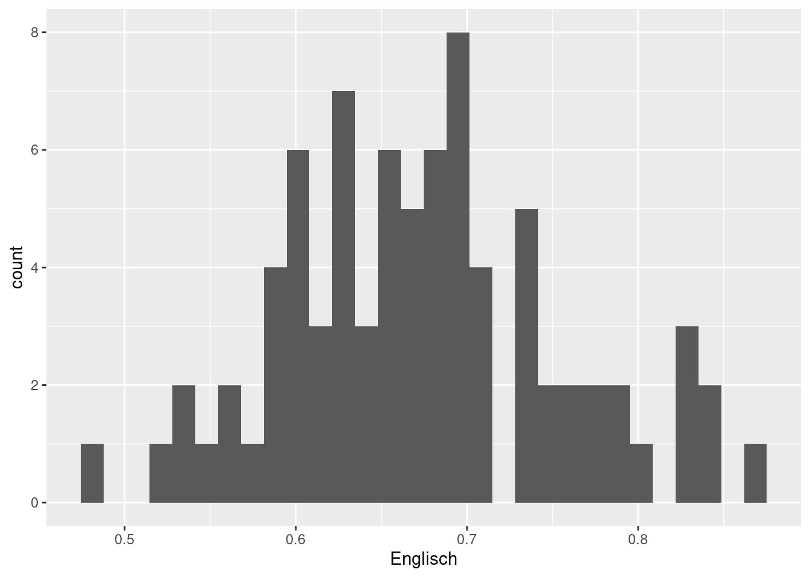
Alternatively, you can use the pipe (|>) to pass the tibble to the ggplot() function. This is merely a matter of personal preference.
Different layers of a ggplot() figure are strung together using +, whereas |> is used outside of the ggplot() code proper to relay an object to the next function.
The histogram shows, among other things, that there are 8 individuals with an English vocabulary score just below 0.7 and 4 with a score just below 0.6. By default, 30 such bins are drawn, but as the warning indicates (‘Pick better value’), there’s nothing special about this number. You can adjust the desired bin width:
There aren’t any hard and fast rules for determining the optimal bin width. The default settings (1st plot) produce a histogram that seems to be a bit too fine-grained, whereas a bin width of 0.2 (2nd plot) results in too coarse a histogram. The other three histograms seem fine by me; I’d probably pick the 4th or 5th for a presentation or when writing a paper.
Alternatively, you can specify the number of bins or you can define the bins yourself:
Incidentally, the intervals are, by default, open to the left and closed to the right. That is, if we have bins (0.6, 0.7] and (0.7, 0.8], the value 0.7 is counted in the bin (0.6, 0.7] and not in (0.7, 0.8].
The histograms we’ve already drawn are probably sufficient for our own private use. But if we wanted to use these histograms in a presentation or in a publication, we ought to make some further changes.
First, use xlab() and ylab() to label axes. Don’t forget the quotation marks.
Next, add a title and, if needed, a subtitle and a caption. See ?labs for further options.
ggplot(data = d_hist,aes(x = Englisch)) +geom_histogram(binwidth =0.05) +xlab("English vocabulary score") +ylab("Number of participants") +labs(title ="The participants' English vocabulary scores",subtitle ="(some subtitle if needed)",caption ="English vocabulary scores were obtained using the LexTALE test." )
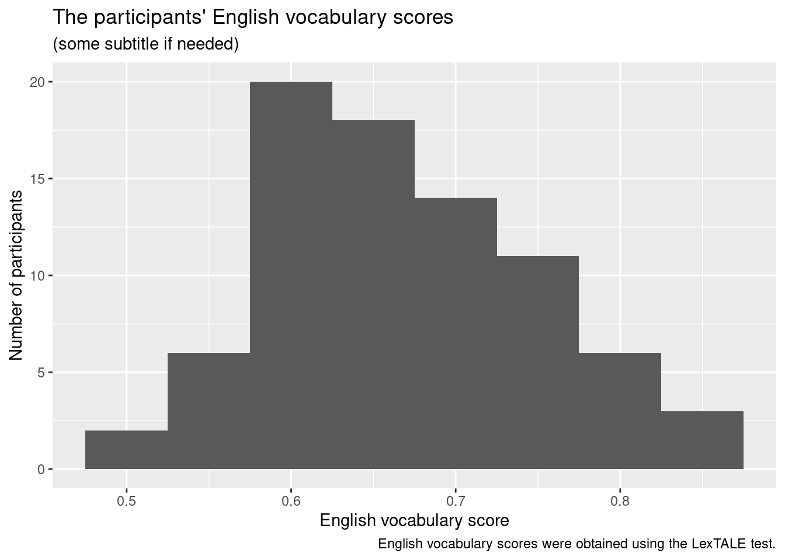
I don’t really like the default colours, but we can easily override those:
ggplot(data = d_hist,aes(x = Englisch)) +geom_histogram(binwidth =0.05,fill ="lightgrey",colour ="black") +xlab("English vocabulary score") +ylab("Number of participants") +labs(title ="The participants' English vocabulary scores",subtitle ="(some subtitle if needed)",caption ="English vocabulary scores were obtained using the LexTALE test." )
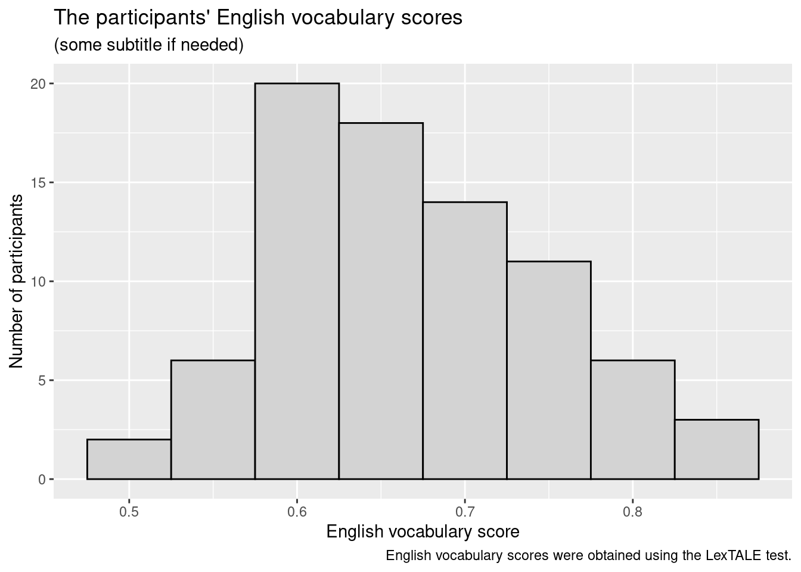
You can also apply one of the ggplot2 themes, see the ggplot2 documentation. For instance,
ggplot(data = d_hist,aes(x = Englisch)) +geom_histogram(binwidth =0.05, fill ="lightgrey",colour ="black") +xlab("English vocabulary score") +ylab("Number of participants") +labs(title ="The participants' English vocabulary scores",subtitle ="(some subtitle if needed)",caption ="English vocabulary scores were obtained using the LexTALE test." ) +theme_bw()
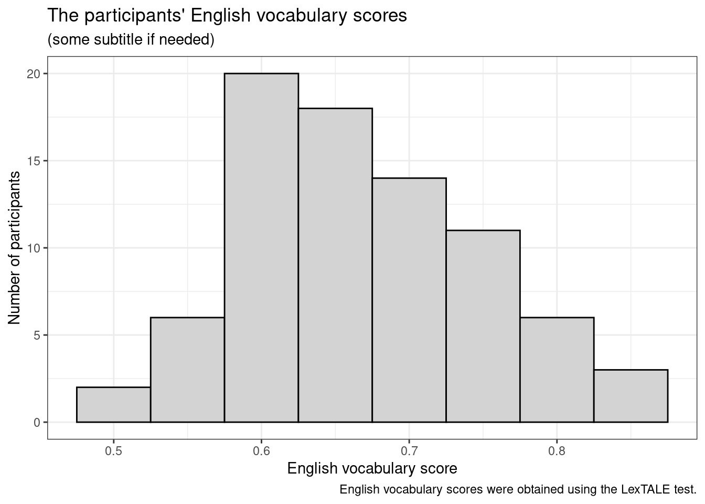
Saving figures
If the last figure was drawn using ggplot(), we can save it using ggsave(). The following command saves the figure as a PNG file, but other common formats such as PDF, BMP, SVG, JPEG and TIFF are supported as well. You can also specify the dimensions and other details, see ?ggsave.
ggsave(here("figs", "histogram_english.png"))
Saving 7 x 5 in image
Alternatively, we can save the figure like so:
pdf(here("figs", "histogram_english.pdf"))ggplot(data = d_hist,aes(x = Englisch)) +geom_histogram(binwidth =0.05, fill ="lightgrey",colour ="black") +xlab("English vocabulary score") +ylab("Number of participants") +labs(title ="The participants' English vocabulary scores",subtitle ="(some subtitle if needed)",caption ="English vocabulary scores were obtained using the LexTALE test." ) +theme_bw()dev.off()
png
2
See ?pdf for details. Related functions are png(), tiff(), svg() etc.
In order to faciliate comparisons of different histograms (e.g., histograms for different subsets of the data, or histograms of the same data but using different bin widths), what’s often plotted along the y-axis isn’t the number of data points in each interval, but a density estimate. To this end, the y-axis is scaled in such a way that the total area covered by the histogram is equal to 1. Use y = after_stat(density) to plot density estimates rather than counts:
We can verify that \[0.05 \times (0.5 + 1.5 + 5 + 4.5 + 3.5 + 2.75 + 1.5 + 0.75) = 1.\]
Note that if we were to express the English vocabulary scores on a scale from 0 to 10 rather than from 0 to 1 and use bins of width 0.5 points rather than of width 0.05 points, the density estimates would be a tenth of what they are now.
Exercise
Draw a suitable histogram for the Französisch variable as well as for the Wortschatz variable in the d_hist dataset. This will require you to tinker with the binwidth setting. Don’t forget to adjust the axis labels. Use ggsave() to save your preferred histogram for each of the two variables as an SVG file.
Boxplots
The file VowelChoices_ij.csv contains a part of the results of a learning experiment in which 80 participants were randomly assigned to one of two learning conditions (LearningCondition: <oe> participants and <ij> participants). The column PropCorrect contains the proportion of correct answers for each participant, and the question we want to answer concerns the difference in the performance between learners in the different conditions. We’ll use these data to introduce boxplots.
Rows: 80 Columns: 3
── Column specification ────────────────────────────────────────────────────────
Delimiter: ","
chr (2): Subject, LearningCondition
dbl (1): PropCorrect
ℹ Use `spec()` to retrieve the full column specification for this data.
ℹ Specify the column types or set `show_col_types = FALSE` to quiet this message.
Below you see a basic boxplot of the vocabulary test scores of the eighty participants in the same learning experiment. The median score is highlighted by a thick line. The 25th and 75th percentiles are highlighted by thinner lines and together form a box. The difference between the 75th and 25th percentile (also known as the third and the first quartile) is called the inter-quartile range (IQR). The data points that don’t fall in the box, that is, the data points that don’t make up the middle 50% of the data, are represented by a line protruding from the upper part of the box and by a line protruding from the lower part of the box. However, data points whose distance to the box exceeds 1.5 times the inter-quartile range are plotted separately. If such data points exist, the lines protruding from the box only extend up to the lowest / highest data point whose distance to the box is lower than 1.5 times the IQR.
From the boxplot below, we can glean that the IQR is \(34 - 31 = 3\). The highest data point has a value of 38. Since \(38 < 34 + 1.5 \times 3 = 38.5\), this data point is captured by the line protruding from the upper part of the box. The lowest data point has a value of 25. Since \(25 < 31 - 1.5 \times 3 = 26.5\), it lies too far from the box to be captured by the line protruding from the lower part of the box, so it gets drawn separately.
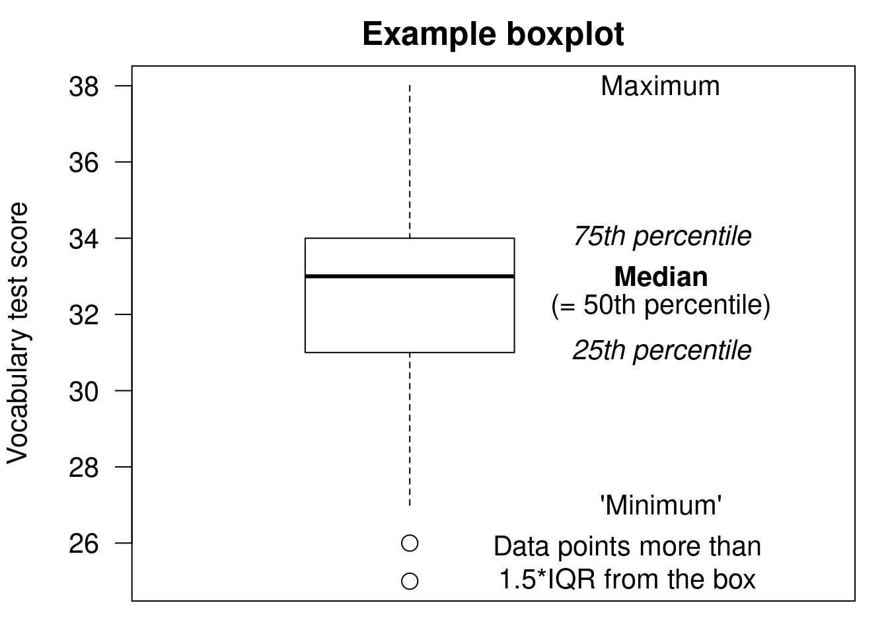
We can draw boxplots in order to compare the distribution of a variable in two groups. But you can also use boxplots to compare more than two groups.
The following command plots the accuracy data (PropCorrect) using a separate boxplot for each condition (LearningCondition). We also add axis labels and change the plotting theme:
ggplot(data = d_box, aes(x = LearningCondition, y = PropCorrect)) +geom_boxplot() +xlab("Learning condition") +ylab("Proportion of correct translations") +theme_bw()
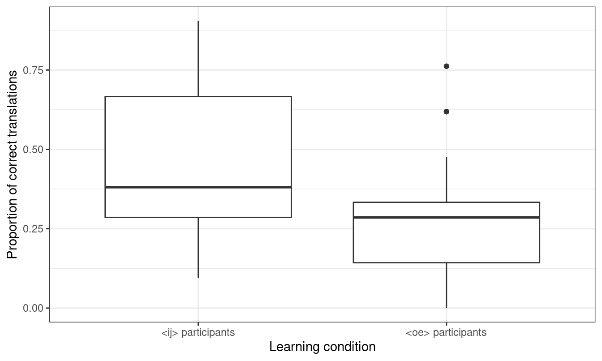
Plain boxplots are useful when you want to get a quick idea of the distribution of the data in different groups. However, identically looking boxplots can represent markedly different distributions! For this reason, it can be useful to draw boxplots that also show the individual data points rather than merely the distribution’s quartiles. Such visualisations are particularly useful when the dataset isn’t prohibitively large, so that you can actually make out the different data points.
To do so, we can another layer to the boxplot by inserting the command geom_point() into the ggplot call. geom_point() draws the data points as, well, points and doesn’t summarise its quartiles like geom_boxplot() does. Since we insert geom_point()aftergeom_boxplot(), these points will be plotted on top of (rather than underneath) the boxplots.
ggplot(data = d_box,aes(x = LearningCondition, y = PropCorrect)) +geom_boxplot() +geom_point() +# draw individual data pointsxlab("Learning condition") +ylab("Proportion correct answers") +theme_bw()
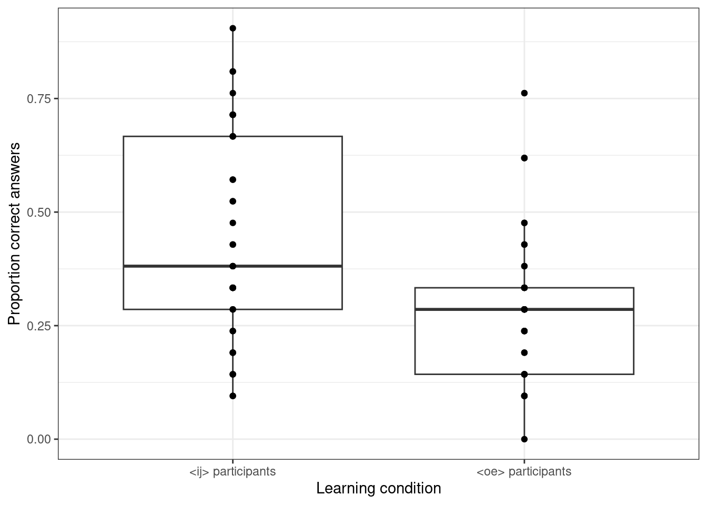
If you count the number of points in the graph above, you’ll notice that there are much fewer points (28) than there were participants (80). The reason is that several participants obtained the same result, and their data are plotted on top of each other. For this reason, it makes sense to move the plotted points a bit apart (jittering). Here we can move the points apart horizontally. To do this, we need to specify the position parameter inside the geom_point() command.
We can specify both width (horizontal jittering) and height (vertical jittering). Fiddle with the setting for width to see what happens if you change it. I’d leave the value for height set to 0 (= no vertical jittering) so that we don’t depict proportions of, say, 0.24 as 0.28.
Notice that I’ve additionally specified the outlier.shape parameter in the geom_boxplot() command as NA (not available). This prevents the geom_boxplot() command from plotting outlying data points so that these points aren’t plotted twice (as part of the boxplot and as an individual data point).
To make the individual data points more visually distinct, we can change the plotting symbol by changing the shape parameter. This overview shows which plotting symbols are available:
Shapes 21 through 25 resemble shapes 1 through 5, but they can be coloured in.
Exercise
The dataset Wagenmakers_Zeelenberg.csv contains data from a study by Wagenmakers et al. (2016). In this experiment, participants were instructed to either smile or pout (Condition) as they judged the funniness of four cartoons on a 10-point scale (0–9). The mean rating per participant can be found in the creatively named column MeanRating. The research question was if smiling participants gave higher funniness ratings than pouting ones.
Your task: Compute the number of participants in each condition as well as the mean MeanRating per condition (see the previous primer). Also draw boxplots (with individual data points) on the basis of which this research question can be answered. Label your axes appropriately. Save a graph you’re happy with using ggsave().
Line charts
Line charts are a reasonable choice for presenting the results of more complex studies. They’re often used to depict temporal developments, but I don’t think their use should be restricted to this. I often use line charts to better understand complex results that are presented in a table. For instance, Slavin et al. (2011) presented their results in four tables (Tables 4–7). I entered the results pertaining to the PPVT (English) and TVIP (Spanish) post-tests into a CSV file (Peabody_Slavin2011.csv):
Rows: 16 Columns: 6
── Column specification ────────────────────────────────────────────────────────
Delimiter: ","
chr (2): CourseType, Language
dbl (4): Grade, Learners, Mean, StDev
ℹ Use `spec()` to retrieve the full column specification for this data.
ℹ Specify the column types or set `show_col_types = FALSE` to quiet this message.
Grade: Grades 1 through 4.
CourseType: EI (English immersion) or TBE (transitional bilingual education).
Language: English or Spanish.
Learners: Number of learners per class, language and course type.
Mean: Mean score per class, language and course type.
StDev: Standard deviation per class, language and course type.
We can plot the development in the English and Spanish test scores for the two course types:
ggplot(data = slavin,aes(x = Grade, y = Mean,colour = Language, # use different colours per languagelinetype = CourseType)) +# use different line types per course typegeom_line() +# connect data points with a linegeom_point() # add data points as points for good measure
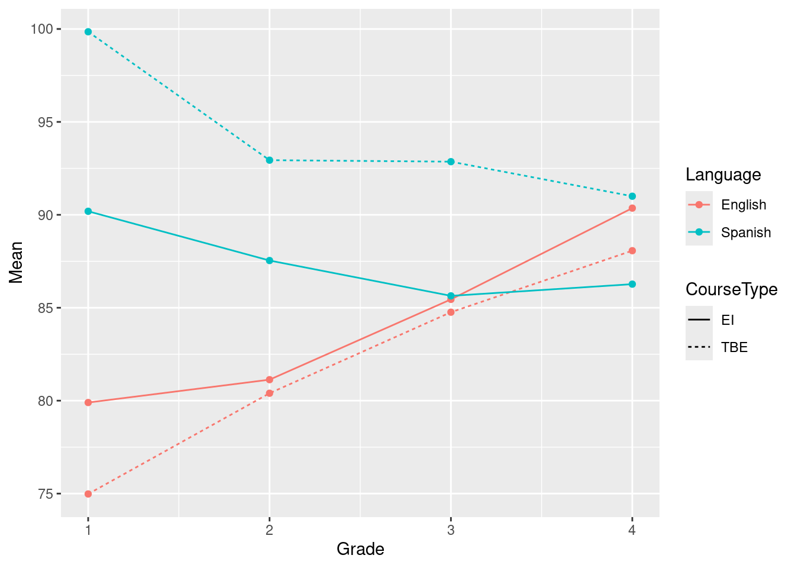
What’s new in the R code is that you can specify more than just an x and a y parameter in the aes() call. When you associate colour and linetype with variables in the dataset, the data associated with different levels of these variables (i.e., English vs. Spanish; TBE vs. EI) will be plotted in a different colour or using a different line type. The colours and line types used here are ggplot’s default choices; we could override those, but that’ll be for later. The same goes for the appearance of the legends.
Using different colours and line types is all good and well if you have a limited number of variables and a small number of levels per variable. But for more complex data, such graphs quickly become confusing. One useful technique is to plot different lines in separate graphs (small multiples) and show the different graphs side-by-side. This is known as facetting. The command facet_grid() can be used to specify the variables according to which the graph should be separated and how. Since the information regarding Language and CourseType is expressed in the facets, we don’t have to express it using colours and linetypes any more. (But feel free to do so if you think it makes things clearer!) We need to quote the names of the variables according to which the facets are to be drawn in a vars() call.
ggplot(data = slavin,aes(x = Grade, y = Mean)) +geom_line() +geom_point() +facet_grid(rows =vars(CourseType), # TBE vs. EI in rows; cols =vars(Language)) # Span. vs. Eng. in columns
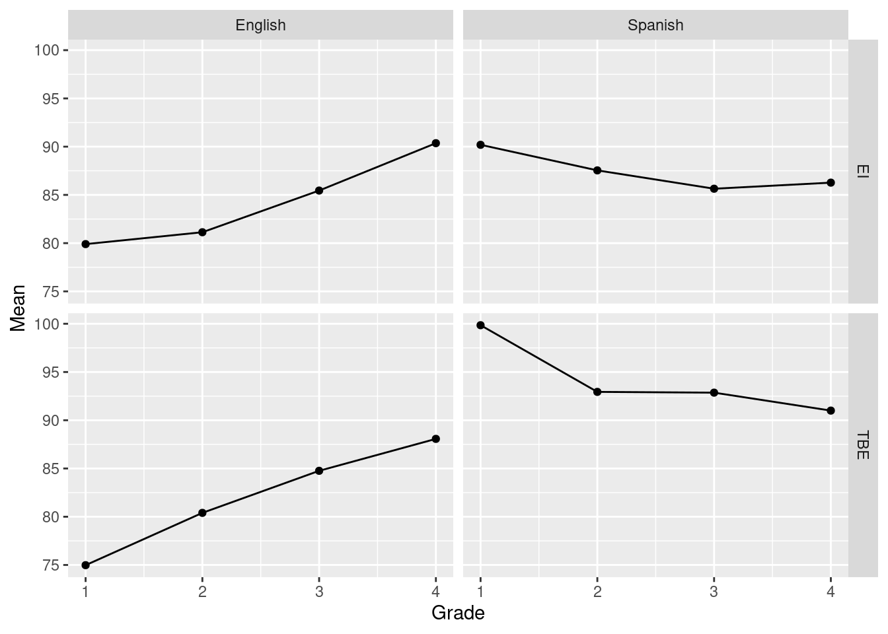
Or you can combine facetting with using different colours or line types. In the next plot, the data for different languages are shown in separate panels, but each panel shows the data for both the TBE and EI pupils. This is particularly useful if we want to highlight differences (or similarities) between the TBE and EI pupils. If instead we wanted to highlight differences or similarities in the development of the pupils’ language skills in Spanish and English, we’d draw this graph the other way round. In addition to connecting the means with a line, this graph also visualises the means using a symbol in order to highlight that there were four discrete measurement times (i.e., no measurements between Grades 1 and 2).
ggplot(data = slavin,aes(x = Grade,y = Mean,shape = CourseType, # different symbols by course typelinetype = CourseType)) +geom_point() +geom_line() +facet_grid(cols =vars(Language)) # only split graph by column (Sp. vs. Eng.)
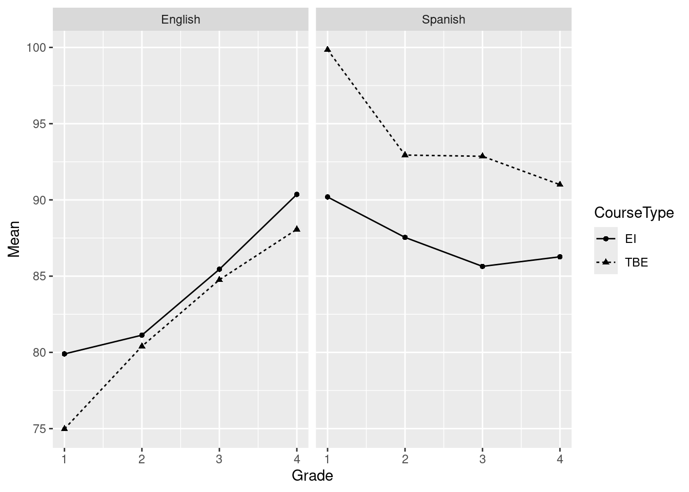
Averages don’t tell the whole story
The line charts above only show the average PPVT and TVIP scores by grade and course type as I don’t have access to the raw data. But averages don’t always tell the whole story.
Consider the following example. You’re reading a study in which 39 participants answer a question on a scale from 0 to 5. The study reports that the average response was 2.43 on this 6-point scale. You would be forgiven for assuming that most participants answered ‘2’ or ‘3’. But this doesn’t have to be the case: the three graphs below all show 39 data points whose mean is 2.43 (after rounding). But we’d interpret the left graph (only extreme choices) differently from the middle graph (whole range of opinions) and from the right graph (only moderate responses).
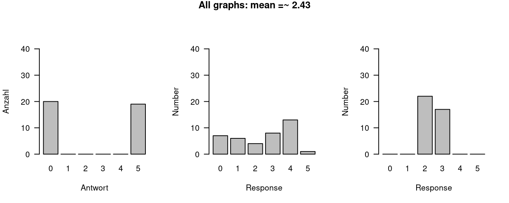
If the reported results include a measure of dispersion (e.g., a standard deviation), the number of possible data patterns is reduced, but there could nonetheless be a multitude of patterns that give rise to the same numerical summaries but that may have to be interpreted differently:
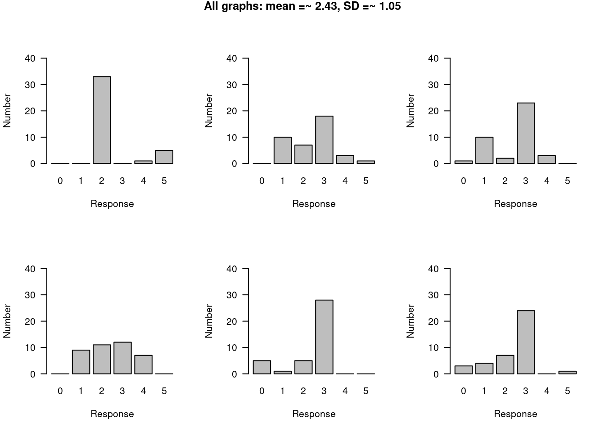
A related reason for graphing the data is to make sure that the numerical results reported are actually relevant. For instance, a study may report a difference in the mean outcomes of two groups and illustrate this with the left panel in the figure below. But if we look at the distribution of the raw data in both groups, shown in the right panel, we realise that there is a strong right skew to these data. This would prompt us to at least ask ourselves the question whether we’re at all interested in the means of these groups.
The upshot is this: If at all possible, don’t just show averages but try to give your readers – and yourselves – a sense of how the actual data are distributed.
Putting it all together (I): Portuguese reading and writing skills
I’ll walk you through this example in the lecture.
Drawing decent graphs can take time
Don’t get disheartened by the lengthy code snippets below. They are not the result of one energetic burst of coding. As I’ll try to demonstrate in the lecture, I started with a fairly basic graph, found some problem with it, tried to fix the error, and so on. The end result is a plot with 27 boxplots that hopefully enables readers to compare the three language groups in terms of their test scores, to gauge the progress that each language group makes from T1 to T3, and that also gives readers a sense of the variation that exists within each group.
Rows: 1904 Columns: 6
── Column specification ────────────────────────────────────────────────────────
Delimiter: ","
chr (2): Subject, LanguageTested
dbl (4): Time, Reading, Argumentation, Narration
ℹ Use `spec()` to retrieve the full column specification for this data.
ℹ Specify the column types or set `show_col_types = FALSE` to quiet this message.
skills_longer_portuguese <- skills |>pivot_longer(Reading:Narration,values_to ="score",names_to ="skill") |>mutate(class =str_split_i(Subject, "_", 1),group =str_split_i(Subject, "_", 2) ) |>mutate(language_group =case_when( group =="CP"~"Portuguese control", group =="CF"~"French control", group =="CD"~"German control", group %in%c("PLF", "PNF") ~"French-Portuguese", group %in%c("PLD", "PND") ~"German-Portuguese",.default ="other" )) |>filter(LanguageTested =="Portuguese")
The three graphs below all show the same data (the proportion of sales of a fictitious pie producer by pie taste).
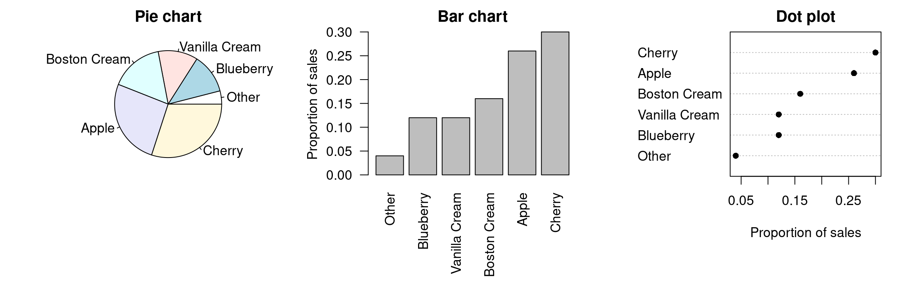
The graph on the left is a traditional pie chart. Though common, this type of graph has serious shortcomings, for which reason it should rarely be used:
Pie charts aren’t very flexible: When the number of categories is larger than here, pie charts are hardly comprehensible. It’s also difficult to add additional information to pie charts (e.g., the proportion of sales by taste the year before; see below).
Readers gauge the numbers (in this case: the proportions) that the pie chart represents less accurately than when they’re presented in a bar chart or in a dot plot (Cleveland and McGill 1984).
The graph in the middle is a bar chart, the one of the right a dot plot. Both are better choices than pie charts. For one things, they’re more flexible. For instance, you can add the sales from the year before to both graphs – as separate bars or by using different symbols. This would be difficult to accomplish in a pie chart:
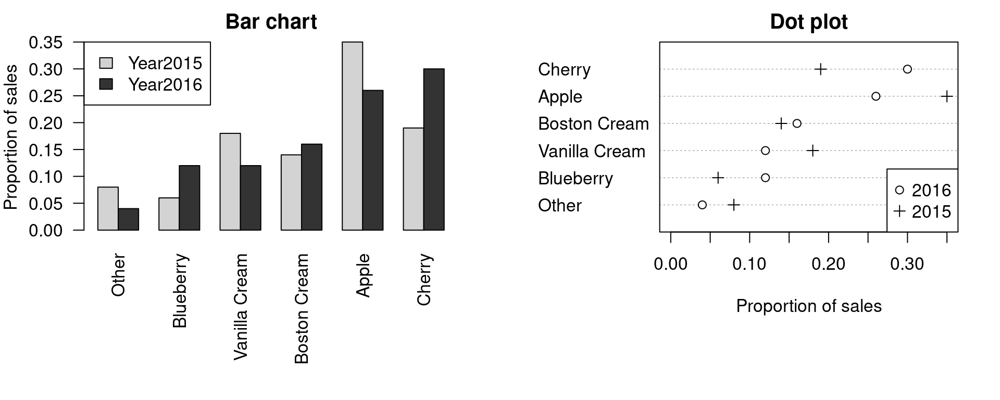
I prefer dot plots because it’s easier to visualise a large number of categories and I find them less ‘busy’.
Bars next to each other
If you prefer bar charts: It’s usually better to plot the bars next to each other rather than to stack them on top of each other.
Don’t use pie charts
A basic Cleveland dot plot
For this tutorial, we’ll use data from Vanhove (2017). For this study, I recruited 175 native speakers of Dutch from Belgium and the Netherlands. I showed them 44 German words with Dutch cognates (e.g., Stadt (NL stad) or Schiff (NL schip)) and asked them to choose their gender-marked definitive article (der (masculine), die (feminine), das (neuter)). Dutch and German are closely related languages, but there are a number of cognates whose grammatical gender differs between both languages. The Dutch word strand (beach), for instance, is neuter, whereas the German word Strand is masculine. One of the research questions was if Belgian and Dutch participants were more likely to choose the neuter article das if the German word’s Dutch cognate is neuter than when it has common gender. (Common gender = non-neuter. Present-day Standard Dutch hardly distinguishes between masculine and feminine gender.)
Rows: 88 Columns: 6
── Column specification ────────────────────────────────────────────────────────
Delimiter: ","
chr (5): Stimulus, Country, DutchCognate, GermanGender, DutchGender
dbl (1): NeuterResponses
ℹ Use `spec()` to retrieve the full column specification for this data.
ℹ Specify the column types or set `show_col_types = FALSE` to quiet this message.
The column NeuterResponses contains the proportion of neuter article (das) choices per German word (Stimulus) per (Country). The column GermanGender contains the word’s correct gender (in German); the column DutchGender contains the grammatical gender of the word’s Dutch cognate.
We can plot the proportion of das choices per word separately per country (Belgium vs. the Netherlands). This will show us how strongly the response pattern varies per word and whether Belgian and Dutch speakers of Dutch show different preferences. Note that I put the word labels along the y-axis, which makes them much easier to read, and the proportion of neuter responses along the x-axis.
The plot above doesn’t offer an answer to the research question since the difference between stimuli with different Dutch genders isn’t highlighted. To accomplish this, we can plot stimuli with neuter cognates and those with common-gender cognates in different boxes (facetting, see the tutorial on line charts). (To see what scales = "free_y" and space = "free_y" accomplish, leave these parameters out of the call, i.e., using just facet_grid(rows = vars(DutchGender)).)
This graph shows pretty clearly that both Belgian and Dutch speakers of Dutch pick das more often if the German word has a neuter-gender cognate than when it has a common-gender cognate: The points in the lower box lie more to the right than those in the upper box. With a single exception (Boot), there is no overlap between these two distributions.
Additionally, the responses of Belgian and Dutch participants don’t seem to vary much from one another. For instance, we don’t observe that most triangles lie to the right of the circles or that Belgian participants prefer das for Wurst and Dutch participants don’t.
Finishing touches
The previous graph is good enough. But we can do better still. German is taught in school in both Flanders and the Netherlands, and at least some participants will have known which words are neuter in German and which aren’t. So some of the variation between the stimuli will be attributable to the stimuli’s German gender. To highlight this, we can split up the graph not only by the words’ Dutch gender, but also by their German gender. And we still have to label the axes!
ggplot(d_dot,aes(x = NeuterResponses, y = Stimulus,shape = Country)) +geom_point() +facet_grid(rows =vars(DutchGender, GermanGender),scales ="free_y", space ="free_y") +xlab("Proportion 'das'") +ylab(element_blank())
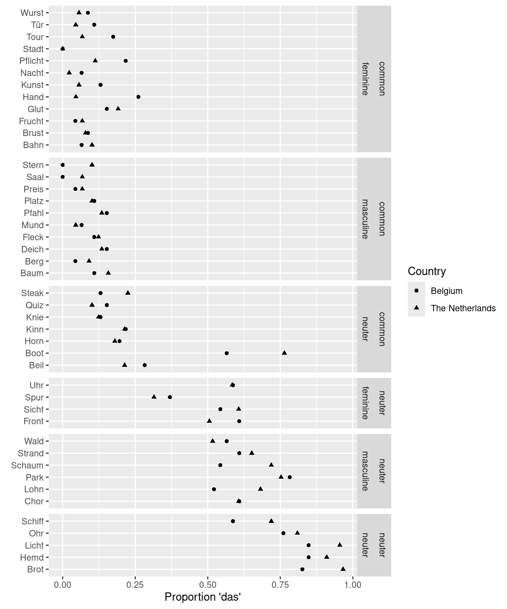
The upper three boxes show feminine, masculine and neuter German words with common-gender cognates; the lower three boxes show feminine, masculine and neuter German words with neuter-gender cognates. The graph shows that the factor Dutch gender is the most important determinant of the participants’ article choices. But the factor German gender also plays a role: When a German word is neuter, both Belgian and Dutch people choose das more often than when it’s feminine or masculine.
Now the words are sorted alphabetically in each box. But this order can be customised. We can also add to the word labels the words’ Dutch counterparts.
We could reorder the facets so that the word categories that result in the most ‘das’ responses are at the top of the graph. While we’re at it, we could also give these facets clearer labels.
The symbols used in the graph above are difficult to distinguish optically. They, too, can be changed.
Hm. The facets with more ‘das’ responses are at the bottom of the graph, whereas within each facet, the words with more ‘das’ responses are at the top. We can fix this by setting the decreasing parameter in the reorder() function. We also put the legend at the bottom of the graph and slightly increase the size of the symbols:
d_dot <- d_dot |># Reorder the gender labels in decreasing order by proportion 'das'mutate(dutch_label =reorder(dutch_label, NeuterResponses, decreasing =TRUE),german_label =reorder(german_label, NeuterResponses, decreasing =TRUE) )ggplot(d_dot,aes(x = NeuterResponses,y = word_label,shape = Country)) +geom_point(size =2) +xlab("Proportion of neuter (das) choices") +ylab("German noun") +scale_shape_manual(values =c(1, 3)) +facet_grid(rows =vars(dutch_label, german_label),scales ="free_y",space ="free_y") +theme_bw() +theme(legend.position ="bottom")
Not half bad, I think.
Suggested reading
As their name suggests, Cleveland dot plots were popularised by William S. Cleveland in his book Visualizing data. But if you want to learn more about this flexible visualisation tool, I suggest you check out Lukas Sönning’s _The dot plot: A graphical tool for data analysis and presentation, which is geared towards linguists.
Scatterplots
For my PhD thesis (Vanhove 2014), I investigated how people’s ability to recognise written and spoken cognates in a related but unknown language develops throughout the lifespan and how it is related to linguistic and cognitive factors. The dataset Vanhove2014_Translations.csv contains the raw data of this study. For each of the 163 participants, this dataset contains 100 entries (one for each cognate), for a total of 16,300 rows. Each translation was rated as correct or incorrect. Additionally, the dataset contains some information about the participants (e.g., their performance on other tasks) as well as about the stimuli (e.g., a measure expressing its formal similarity to its French, German or English cognate).
Rows: 16300 Columns: 15
── Column specification ────────────────────────────────────────────────────────
Delimiter: ","
chr (5): Stimulus, Mode, Translation, Sex, Status
dbl (10): Subject, Trial, Correct, Age, NrLang, DS.Total, WST.Right, Raven.R...
ℹ Use `spec()` to retrieve the full column specification for this data.
ℹ Specify the column types or set `show_col_types = FALSE` to quiet this message.
The variables:
Stimulus: The word to be translated.
Subject: The participant’s ID.
Mode: Whether the word was presented in its spoken (Auditory) or in its written form (Visual).
Trial: The position of the word in the task.
Translation: The participant’s translation attempt for the stimulus.
Correct: Whether the translation was correct (1) or incorrect (0).
Sex
Age
NrLang: The number of languages the participant spoken.
DS.Total: The participant’s score on a working memory task.
WST.Right: The participant’s score on a German vocabulary test.
Raven.Right: The participant’s score on an intelligence test.
English.Total: The participant’s score on an English-language test.
Status: Whether the stimulus has a German, English, or French cognates (target) or not (profile).
MinLev: The degree of formal discrepancy between the stimulus and its most similar German, English or French cognate. (lower = more similar)
Missing values were labelled NA (not available).
A rough summary can be obtained like so:
summary(d_scatter)
Stimulus Subject Mode Trial
Length:16300 Min. : 64 Length:16300 Min. : 1.0
Class :character 1st Qu.:2909 Class :character 1st Qu.:13.0
Mode :character Median :5731 Mode :character Median :25.5
Mean :5317 Mean :25.5
3rd Qu.:7794 3rd Qu.:38.0
Max. :9913 Max. :50.0
Translation Correct Sex Age
Length:16300 Min. :0.0000 Length:16300 Min. :10.00
Class :character 1st Qu.:0.0000 Class :character 1st Qu.:16.00
Mode :character Median :0.0000 Mode :character Median :39.00
Mean :0.3523 Mean :40.28
3rd Qu.:1.0000 3rd Qu.:60.00
Max. :1.0000 Max. :86.00
NrLang DS.Total WST.Right Raven.Right
Min. :1.000 Min. : 2.000 Min. : 4.00 Min. : 0.0
1st Qu.:2.000 1st Qu.: 5.000 1st Qu.:29.00 1st Qu.:12.0
Median :3.000 Median : 6.000 Median :34.00 Median :19.0
Mean :3.067 Mean : 6.374 Mean :30.24 Mean :17.8
3rd Qu.:4.000 3rd Qu.: 8.000 3rd Qu.:36.00 3rd Qu.:24.0
Max. :9.000 Max. :12.000 Max. :41.00 Max. :35.0
NA's :100
English.Total Status MinLev
Min. : 3.00 Length:16300 Min. :0.0000
1st Qu.:20.75 Class :character 1st Qu.:0.2857
Median :31.00 Mode :character Median :0.4000
Mean :28.30 Mean :0.4566
3rd Qu.:37.00 3rd Qu.:0.6062
Max. :44.00 Max. :1.0000
NA's :300
In order to be able to sensibly visualise these data, we need to first transform this dataset. If we’re interested in the relationship between the participants’ age, sex, and linguistic and cognitive test results on the one hand and their translation performance on the other hand, it seems useful to first compute the number of correct translations for spoken and written words per participant. To this end, we can use the tools introduced in the Datasets part of this lecture. Note that we group_by() not just Subject and Mode, but also by a bunch of participant-related variables. This way, we don’t need to construct a tibble with these variables and then join it with the summary data:
To investigate the relationhip between, say, WST.Right and number_correct, we can plot these data in a scatterplot. While we’re at it, we can split up this graph into two panels: one for written words, and one for spoken words.
ggplot(dat = per_participant,aes(x = WST.Right, y = nr_correct)) +geom_point(shape =1) +xlab("L1 vocabulary test") +ylab("Number of correct translations\n(out of 45)") +facet_grid(cols =vars(Mode)) +theme_bw()
Warning: Removed 2 rows containing missing values or values outside the scale range
(`geom_point()`).
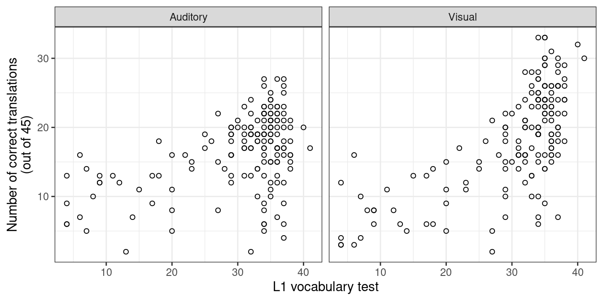
The warning concerns missing values in the WST.Right variable:
per_participant |>filter(is.na(WST.Right))
# A tibble: 2 × 10
Subject Age Sex WST.Right Raven.Right English.Total NrLang DS.Total Mode
<dbl> <dbl> <chr> <dbl> <dbl> <dbl> <dbl> <dbl> <chr>
1 1967 72 male NA 3 10 1 5 Audit…
2 1967 72 male NA 3 10 1 5 Visual
# ℹ 1 more variable: nr_correct <dbl>
As for the decision which variable to put along which axis. By and large, put the variable that is most likely to be the cause of the relationship along the x axis and the variable that is most likely to be the effect along the y axis. In this case, it seems more likely that L1 skills affect one’s ability to recognise cognates in a foreign language than vice versa. Hence, put the variable representing L1 skills along the x axis.
No correlations without scatterplots!
Relations between two numeric variables are often summarised by means of a correlation coefficient. It’s important to appreciate that any correlation coefficient can correspond to a multitude of underlying data patterns. Crucially, correlation coefficients close to 0 do not have to mean that there is no relation between the two numeric variables (the relation may be strongly nonlinear), and correlation coefficients close to 1 (or -1) don’t have to mean that there is a strong relation between the two numeric variables (the correlation may be driven by an outlier, among other possibilities).
So, whenever you want to compute a correlation coefficient, draw a scatterplot first. And show it to your readers.
Trendlines
Consider the following scatterplots:
ggplot(dat = per_participant,aes(x = English.Total, y = nr_correct)) +geom_point(shape =1) +xlab("Result English test") +ylab("Number of correct translations") +facet_grid(cols =vars(Mode))
Warning: Removed 6 rows containing missing values or values outside the scale range
(`geom_point()`).
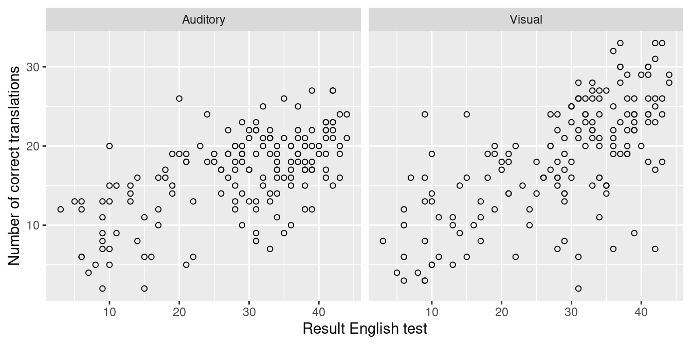
We can add scatterplot smoothers to these plots by means of geom_smooth(). Scatterplot smoothers were developed to discover relationships (including nonlinear ones) between two variables that aren’t necessarily immediately obvious if the data are shown in a scatterplot. Here I turn off the confidence band around the scatterplot smoother (se = FALSE) as confidence bands are a topic well beyond the scope of this primer.
ggplot(dat = per_participant,aes(x = English.Total, y = nr_correct)) +geom_point(shape =1) +geom_smooth(se =FALSE) +xlab("Result English test") +ylab("Number of correct translations") +facet_grid(cols =vars(Mode))
`geom_smooth()` using method = 'loess' and formula = 'y ~ x'
Warning: Removed 6 rows containing non-finite outside the scale range
(`stat_smooth()`).
Warning: Removed 6 rows containing missing values or values outside the scale range
(`geom_point()`).
The points on the smoother are a kind of mean value of the \(Y\) variable for the respective \(X\) value. In the left panel, for instance, the average number of correct translations in the auditory mode for someone with an English test score of 30 is roughly 17–18, whereas the average number of correct translations for written words for participants with a score of 40 on the English test is about 25.
We needn’t amuse ourselves with the maths behind these smoothers, but the following points are important:
The trend line is nearly always a bit wiggly. This is the case even when the relationship itself is as good as linear.
The default settings for geom_smooth() tend to work fairly well, but sometimes it’s necessary to fiddle with them so that the smoother captures the trend in the data better.
To elaborate on the second point, consider the graph below, which shows a scatterplot of simulated data with two scatterplot smoothers. The red line was drawn with the default settings. This line doesn’t capture an important feature of the relationship (the data points go up and down). The blue line captures this trend much better. It was drawn using the command geom_smooth(span = 0.1). The span parameter determines how wiggly the curve may be (the smaller span, the wigglier the curve). By default, span is set to 0.75. Finding a decent span value is matter of trial and error.
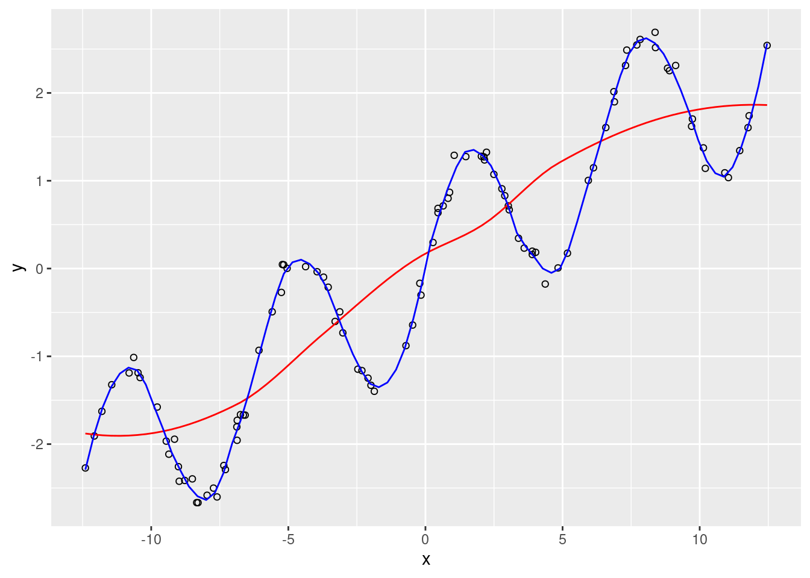
In the second example, the red line was drawn using geom_smooth(span = 0.1). This line is much too wiggly, and it essentially models random deviations from the general trend. The blue line, drawn with the default setting (span = 0.75), captures the general trend much more sensibly. The green line, by contrast, isn’t wiggly enough (span = 3).
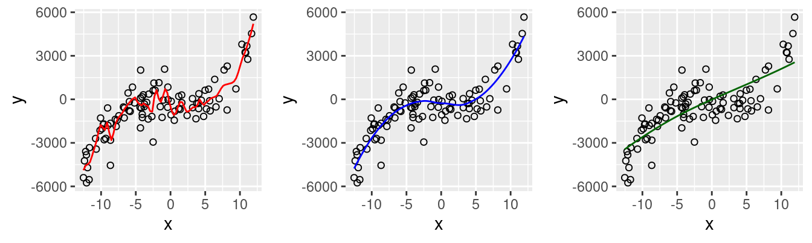
Summing up: Generally, the default settings work reasonably well. But when you notice that visually salient patterns in the scatterplot aren’t captured by the trend line, you need to fiddle a bit with the span parameter.
More generally, data analysis and statistics aren’t a matter of blindly applying formulae and recipes.
Scatterplot matrices
Scatterplot matrices are useful for showing the bivariate relationships among multiple variables. I usually use a custom function, scatterplot_matrix(), to plot such scatterplot matrices. To use this function, load the scatterplot_matrix.R file that you’ve put in the functions subdirectory:
source(here("functions", "scatterplot_matrix.R"))
Let’s look at an example. We read in the lexical metrics data and text ratings from the French/German/Portuguese project (see the Datasets primer), compute the average rating per text, and plot the relationships between the average rating, the number of tokens in the texts as well as the texts’ type/token ratio in a scatterplot matrix:
Rows: 3060 Columns: 137
── Column specification ────────────────────────────────────────────────────────
Delimiter: ","
chr (8): Text, Subject, Text_Language, Text_Type, LemmawordsNotInSUBTLEX, ...
dbl (129): Time, TTR, Guiraud, nTokens, nTypes, nLemmas, meanWordLength, MST...
ℹ Use `spec()` to retrieve the full column specification for this data.
ℹ Specify the column types or set `show_col_types = FALSE` to quiet this message.
Rows: 29179 Columns: 20
── Column specification ────────────────────────────────────────────────────────
Delimiter: ","
chr (15): Batch, Rater, Text, Subject, Text_Language, Text_Type, Rater_Sex, ...
dbl (4): Trial, Rating, Time, Rater_Age
lgl (1): Rater_NativeLanguageOther
ℹ Use `spec()` to retrieve the full column specification for this data.
ℹ Specify the column types or set `show_col_types = FALSE` to quiet this message.
On the main diagonal, we see a histogram for each variable as well as the number of data points that each histogram is based on. Here, we have \(n = 180\) for all histograms. But if you have missing data for some variables, these numbers will vary.
In the top triangle, we see scatterplots (including scatterplot smoothers) for the three bivariate relatonships. The scatterplot in the \((i,j)\)-th cell shows the relationship between the variable whose histogram is shown in the \(i\)-th row (along the y-axis) and the variable whose histogram is shown in the \(j\)-th column (along the x-axis). That is, the top right scatterplot shows the relation between the number of tokens (log-2 transformed, on the x-axis) and the mean rating (along the y-axis).
In the bottom triangle, the Pearson correlation coefficients for these relationships are shown, along with the number of data points it is based on. For instance, the number -0.15 is the correlation between the mean ratings and the type/token ratios, whereas 0.70 is the correlation between the mean ratings and the number of tokens (log-2 transformed).
Incidentally, I transformed the number of tokens because this variable was pretty right-skewed. If the log-2 transformed value is 4, then the original value is \(2^4 = 16\); if the log-2 transformed value is 6, then the original value is \(2^6 = 64\).
An alternative to scatterplot_matrix() is the ggpairs() function from the GGally package.
Suggested reading
Kieran Healy’s Data visualization: A practical introduction does a stirling job at explaining the why and the how of drawing graphs using R and the tidyverse. In addition to the material covered in this lecture, Healy covers drawing maps and drawing visualisations of statistical models. The entire book is freely available from socviz.co.